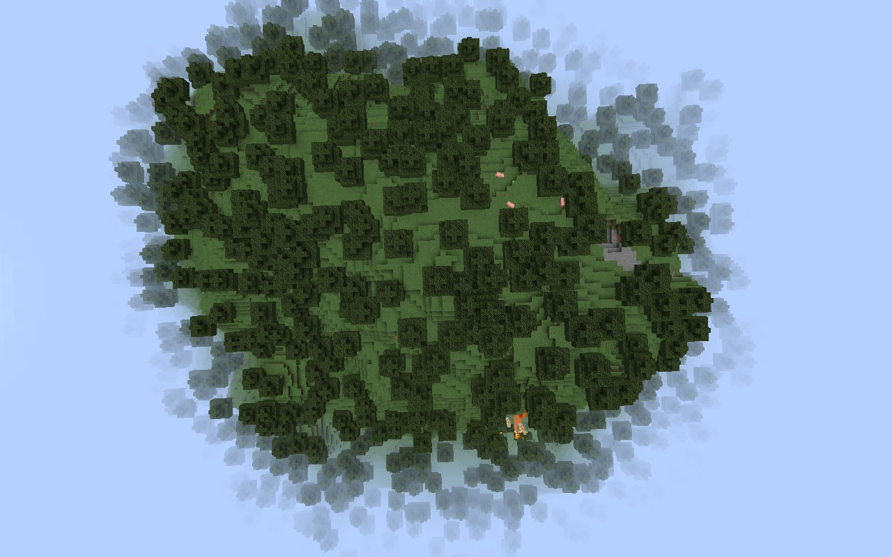
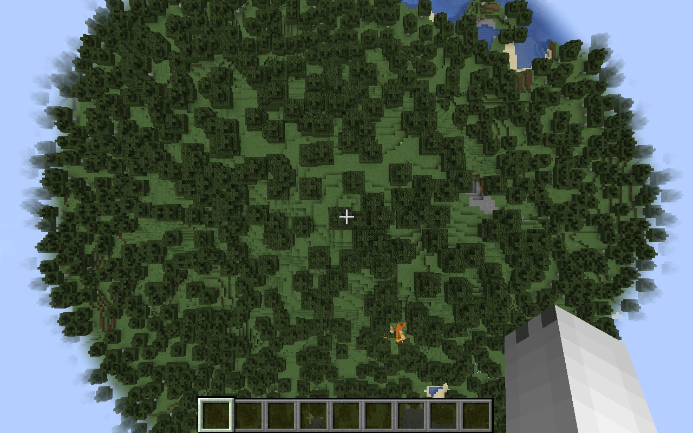

У номері:
- Minecraft 1.18.1: прибрали жуків одних, з'явилися інші
- Приємності для тих, хто робить карти і данжі: що було недосказано минулого тижня

Minecraft 1.18.1: що нового
- Туман. Тепер "має циліндричну форму" замість сферичної, і починається трохи далі. Можете це побачити на малюнках нижче, зліва - 1.18, справа - 1.18.1, на тому ж місці за тієї ж промальовки у 8 чанків.


- Виправлення багів. Напевне, найголовніше, заради чого і виходила 1.18.1. Їх, на диво, небагато:
- Бджоли. Могли іноді зникати з вуликів при перезаході у світ.
- Іноді при перезаході у світ могли скидатися щойно активовані маяки.
- Виправлено ламання редстоунових механізмів командою
/clone
.
- Усунено вразливість, за допомогою якої можна було виконувати код на комп'ютері будь-якого гравця, що підключився до серверу, через чат. Напевне, найголовніше, і одна з головних причин, чому після третього кандидату на реліз, що вийшов сьогодні, версія була випущена, знову ж таки, так швидко.
- Ну і наостанок приємне: зменшено вірогідність кіку з сервера гравців з низьким пінгом
- Ну і з того, що не увійшло до минулого випуску - у 1.18 зняли ліміт на кількість символів у назвах тегів і змінних у командах. Не те щоб це було надто важливо для всіх, але, все ж, іноді таке обмеження у 20 символів трішки заважало...
Як бачите, випуск вийшов і справді невеликий, особливо у порівнянні з минулими. Та без головоломки ми вас не відпустимо, пишіть свої варіанти у коментарі до публікації в Лапоновинах з оголошенням про цей випуск "Шведського віснику" свої здогадки щодо наступної загадки:
(Якщо у вас аудіо не відтворюється на сторінці, можете спробувати завантажити його звідси)